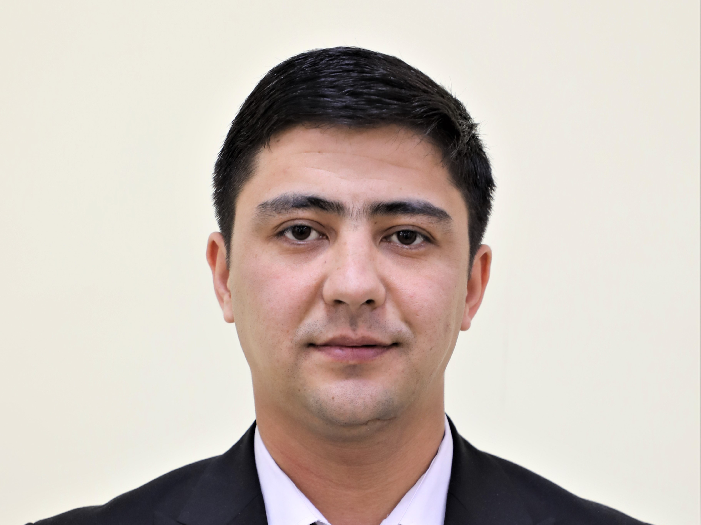

Yusupov Ozod
Ozod Yusupov texnika fanlari boʻyicha falsafa doktori (PhD), dotsent. 2013-yildan buyon Samarqand davlat universitetida turli lavozimlarda faoliyat yuritib keladi. 2020-yildan Samarqand davlat universiteti dasturiy injiniring kafedrasi mudiri. 2020-yilda “Ko‘zning rangdor pardasi tasviri bo‘yicha shaxsni biometrik identifikatsiyalash algoritmlari” mavzusida texnika fanlari boʻyicha falsafa doktori dissertatsiyasini himoya qilgan. Uning Scopus, Web of Science xalqaro bazalarga kiruvchi ilmiy jurnallarda 2 hamda respublika ilmiy jurnallarida 15 ga yaqin maqolalari e’lon qilingan. Shuningdek, 1 darslik, 3 oʻquv qoʻllanma muallifi. Olim asosan turli kompyuterli koʻrish, tasvirlarga ishlov berish, timsollarni tanib olish va biometrik texnologiyalar kabi ilmiy yoʻnalishlarda tadqiqotlar olib boradi.
Dasturiy injiniring kafedrasi a’zolari
Qobilov Sami Soliyevich
Samarqand davlat universiteti dasturiy injiniring kafedrasi dotsenti. 1979-yildan beri Samarqand davlat universitetida turli lavozimlarda faoliyat yuritib keladi. Olim texnika fanlari boʻyicha “Axborot tizimlarini iterativ loyihalash va uning dasturiy tashkil qilinishi” mavzusidagi dissertatsiyasini himoya qilgan. Sami Qobilov faoliyati davomida 1 darslik, 7 о‘quv, uslubiy qо‘llanmalar muallifi. Shuningdek, olim bugunga qadar 5 Scopus va Web of Science bazasiga kiruvchi jurnallarda maqolalar e’lon qilgan. Uning asosiy ilmiy yoʻnalishi dasturiy ta’minotlarni ishlab chiqish, lokallashtirish, kompyuter lingvistikasi, tabiiy tillarga ishlov berish hisoblanadi.
Turakulov Iskandar
Samarqand davlat universiteti dasturiy injiniring kafedrasi dotsenti. 1986-yilda texnika fanlarining qattiq jismlar mexanikasi ixtisosligi boʻyicha “Harakatlanuvchan yuklamalarni qatlamli plastinkalarga ta’siri” mavzusidagi falsafa doktori dissertatsiyasini muvaffaqiyatli himoya qilgan. Iskandar To‘raqulov faoliyati davomida 3 amaliy dastur yaratib, patentlarni qo‘lga kiritgan. Shuningdek, 13 dasturiy mahsulot uchun guvohnoma olgan, 8 о‘quv va uslubiy qо‘llanmalar muallifi. Respublika va xalqaro ilmiy jurnallarda bir qator maqolalari chop etilgan. Olim dasturiy ta’minotlarni ishlab chiqish, lokallashtirish, kompyuter lingvistikasi, tabiiy tillarga ishlov berish yo‘nalishida ilmiy tadqiqot olib boradi.
Obloqulov Sardor
Samarqand davlat universiteti dasturiy injiniring kafedrasi assistenti. 2021-yildan SamDU da faoliyat yuritib kelmoqda. Sardor Obloqulov faoliyati davomida robototexnika va texnik jarayonlarni avtomatlashtirish bo‘yicha bir nechta loyihalar yaratgan va hozirda bu loyihalar bo‘yicha ishlarni davom ettirmoqda. Hozirda tadqiqotchi ushbu loyihalarni patentlashtirish ustida ishlash bilan bir qatorda IoT tizimi bo‘yicha ilmiy tadqiqot ishlarini olib bormoqda. Bundan tashqari robototexnika sohasini rivojlantirish maqsadida universitet talabalariga robototexnika bo‘yicha qo‘shimcha kurslar tashkil qilib, ularga ta’lim berib kelmoqda